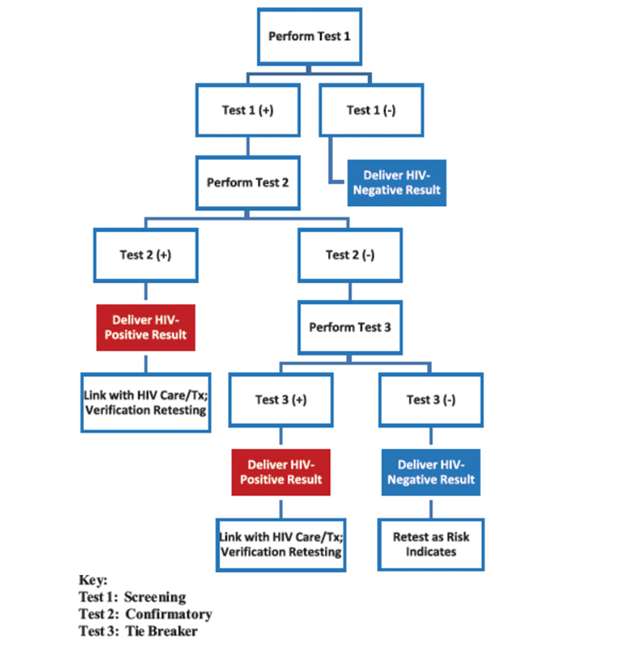

Diagnosis of HIV infection is simply a proof of the presence of HIV in an individual and this can be achieved by demonstrating the presence of HIV antibodies in plasma or serum (indirect test) or the virus in blood (direct test). Available test for diagnosis of HIV include antibody test, antigen tests and nucleic acid tests. The antibody detection test is suitable for diagnosis of HIV infection in adults and children 18 months and above, while the nucleic acid tests is used mainly for diagnosis of HIV infection in children under 18 months. On no account should a diagnosis of HIV infection be made without first obtaining a positive result from either of the test methods highlighted above.
Risk Stratification is a strategy that identifies those who are likely to be infected with HIV based on their risk exposure. Risk stratification implies the estimation of the probability of experiencing an adverse effect. The HIV risk stratification tool enables service providers determine if a client presenting at the health facility or community is eligible for an HIV test or not, following an assessment using a set of predetermined criteria. The Risk stratification Tool (RST) has been useful in aiding the programme to be more efficient in the testing of clients.
Safe and Ethical Index Partner Testing Services: Index testing services (ITS) should be offered by a trained provider in an appropriate, safe and ethical manner. The provider should ask people diagnosed with HIV (index clients) to list their sexual partners, drug-injecting partners (where applicable), children, and other family members. If the index client agrees, offer these partners and the children HIV testing services (HTS). The process is completely voluntary. Such services are key to increasing HIV case finding and achieving epidemic control
HIV Self-testing (HIVST): refers to a process in which a person collects his or her own specimen (oral fluid or blood) and then performs an HIV test and interprets the result, often in a private setting, either alone or with someone he or she trusts. As with all approaches to HTS, HIVST should always be voluntary, not coercive or mandatory. Although reported misuse and social harm are rare, efforts to prevent, monitor, and further mitigate related risks are essential. A positive HIVST result always requires further testing and confirmation from a trained provider, starting from the beginning of the validated national testing algorithm. Importantly, HIVST is a screening test and should not be used to provide a definitive HIV diagnosis. A negative HIVST is reliable evidence of no infection and does not require additional testing unless PrEP is planned, in which case the negative result should be confirmed using the national testing algorithm before PrEP initiation
Recency testing: refers to an anti-body-based test to distinguish recent from long-term HIV infection using antibody avidity (binding strength). The recency test kit is used to indicate whether a person’s HIV infection was recently acquired (i.e. in the last 4-6 months). This promises to be a useful tool for disease monitoring and surveillance. All kits for this procedure should be evaluated in-line with National standards before deployment for public health use after post market validation. This test should be done immediately after the client tests positive using the National testing algorithm.
Laboratory diagnosis of HIV infection is based on the demonstration of antibodies in plasma or serum (indirect testing) or of the viral nucleic acid in the blood (direct testing). With the technology that is available at present, HIV antibodies are usually detectable within four to six weeks of infection, and within 24 weeks in virtually all infected individuals. The virus can be demonstrated in the blood with nucleic acid-based tests (PCR for proviral HIV DNA and RT-PCR for plasma viral RNA) and viral culture.
The antibody assays that are used for HIV diagnosis consist of: Routine antibody testing is performed with the serial or parallel testing algorithms using rapid test kits. The National HIV programme uses serial testing algorithm for screening for HIV. Screening tests include Enzyme-linked Immunosorbent Assay (ELISA) this is mainly used at blood bank to screen blood for transfusion medicine.
Serial and parallel testing algorithms are the two HIV testing algorithms. The algorithm recommended for routine HIV testing is the serial HIV testing algorithm. Rapid test kits recommended for use under this algorithm include Determine, Unigold, Stat-Pak, Double-check Gold, Sure-Check, HIV Quick Check and HIV Status, among others. HIV serological assays adopted for use should have a minimum sensitivity of 99% and specificity of 98%. All test kits meeting these conditions should be approved by the Honorable Minister of Health following formal evaluation by appropriate government agencies. All groups and organizations wishing to procure test kits for use in the country should adhere to the approved RTKs. Similarly, all newly procured batches of RTKs should undergo Post-Market Validation (PMV) duly endorsed by the national and State HIV Program.
This refers to the use of 2 different screening tests employed sequentially to test for HIV antibody. If the initial screening is negative, no further testing is required. If the initial test is positive, it is followed by a second test. The first test should be the most sensitive test and the second test should be very specific and based on an antigen source different from that of the first test. Samples that produce discordant results in the two tests are subjected to a third test called a tiebreaker. The main advantage of the serial over the parallel testing is the cost-savings in testingA.
